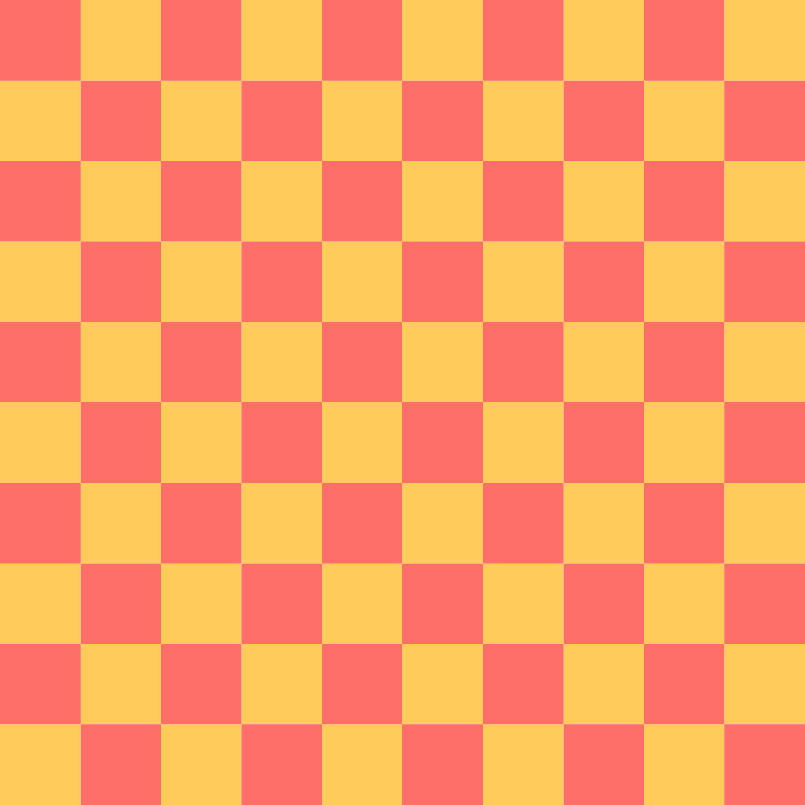
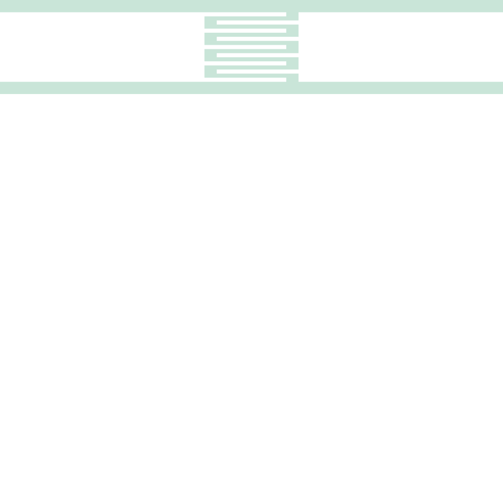
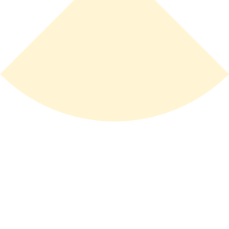

Compound shapes
#
Devices.Tags.checkerboard! — Function.
checkerboard!{T}(c::Cell{T}, pixsize, rows::Integer, alt; kwargs...)
In cell c, generate a checkerboard pattern suitable for contrast curve measurement, or getting the base dose for PEC.
pixsize: length of one side of a squarerows: number of rows == number of columnsalt: the square nearestPoint(zero(T), zero(T))is filled (unfilled) iffalse(true). Use this to create a full tiling of the checkerboard, if you wish.
Example:
c = Cell("main", nm) checkerboard!(c, 20μm, 10, false, layer=2) checkerboard!(c, 20μm, 10, true, layer=3)

#
Devices.Tags.grating! — Function.
grating!{T}(c::Cell{T}, line, space, size; kwargs...)
Generate a square grating suitable e.g. for obtaining the base dose for PEC.
Example:
c = Cell("main", nm) grating!(c, 100nm, 100nm, 5μm, layer=3)
#
Devices.Tags.interdigit! — Function.
interdigit!{T}(c::Cell{T}, width, length, xgap, ygap, npairs::Integer,
skiplast=true; kwargs...)
Creates interdigitated fingers, e.g. for a lumped element capacitor.
width: finger widthlength: finger lengthxgap: x-offset at ends of fingersfingergap: gap between fingersnpairs: number of fingersskiplast: should we skip the last finger, leaving an odd number?
Example:
c = Cell("main", nm) interdigit!(c, 1μm, 20μm, 1μm, 3μm, 5, true; layer = 5)

#
Devices.Tags.radialcut! — Function.
radialcut!{T}(c::Cell{T}, r, Θ, h, narc=197; kwargs...)
Returns a polygon for a radial cut (like a radial stub with no metal). The polygon has to be subtracted from a ground plane.
The parameter h is made available in the method signature rather than a because the focus of the arc (top of polygon) can easily centered in a waveguide. If it is desirable to control a instead, use trig: a/2 = h*tan(Θ/2).
Parameters as follows, where X marks the origin and (nothing above the origin is part of the resulting polygon):
Λ
/│\
/ │ \
/ | \
. / │Θ/2\
. / │----\
/ / h │ \
/ / │ \
/ / │ \
r / │ \
/ / │ \
/ /----------X----------\
/ /{--------- a ---------}\
. / \
. / \
/ \
/ \
/ \
--┐ ┌--
└--┐ ┌--┘
└--┐ ┌--┘
└--┐ ┌--┘
└-----------┘
(circular arc)
Example:
c = Cell("main", nm) radialcut!(c, 20μm, 90°, 5μm, layer=1)

#
Devices.Tags.radialstub! — Function.
radialstub!{T}(c::Cell{T}, r, Θ, h, t, narc=197; kwargs...)
See also the documentation for radialcut!.
Returns a polygon for a radial stub. The polygon has to be subtracted from a ground plane, and will leave a defect in the ground plane of uniform width t that outlines the (metallic) radial stub. r refers to the radius of the actual stub, not the radius of the circular arc bounding the ground plane defect. Likewise h has an analogous meaning to that in radialcut! except it refers here to the radial stub, not the ground plane defect.
Example:
c = Cell("main", nm) radialstub!(c, 20μm, 90°, 5μm, 1μm, layer=1)
